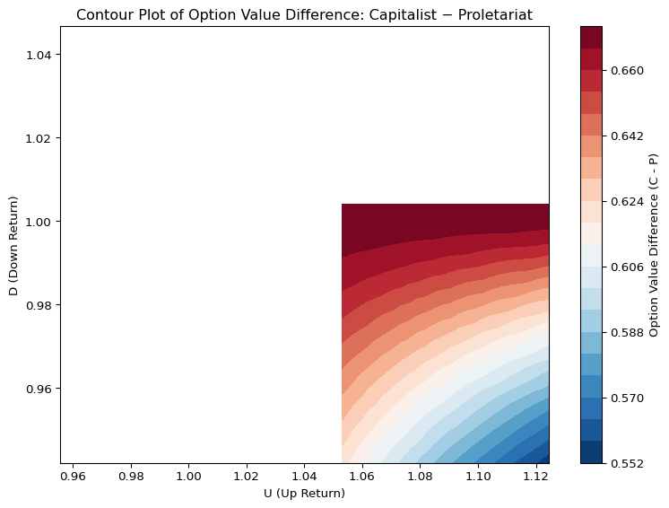

Proletariat Class Children Parameters:
U_p: 1.0060
D_p: 0.9968
R_p: 1.0051
Capitalist Class Children Parameters:
U_c: 1.0711
D_c: 0.9916
R_c: 1.0514
Fair price of Call Option, held by Proletariat Class Children:
0.3043
Fair price of Call Option, held by Capitalist Class Children:
0.9728Market Price of Education
The seemingly Equal Opportunities under Structural Inequality
Abstract
This study models the unequal valuation of educational qualifications in stratified economic systems. While educational standards appear uniform across classes, their realized economic value diverges due to inherited capital and opportunity access. We formalize this divergence by applying the Equivalent Martingale Measure (EMM) framework to a two-class model - the proletariat, who access general opportunities, and the capitalist class, who additionally access exclusive ones. In this model, capital constraints create structural “limits to arbitrage” between opportunity sets, embedding inequality into the very fabric of intergenerational mobility. We conceptualize educational qualifications as the strike price in an intergenerational call option - a child may claim inherited capital only upon satisfying a minimum educational standard. We quantify the differential option value of education across classes and interpret this as a measure of structural inefficiency in equal opportunity narratives.
Keywords
equivalent martingale measure, equal education opportunity
1 Introduction
In economically stratified societies, opportunities presented as equal—such as access to education or standardized qualifications—often yield vastly unequal outcomes across social classes. This paradox arises not from individual differences in merit, but from structural disparities in access to capital, networks, and strategic opportunities. As a result, the same formal credential may function as a gateway to ownership and control for one class, and to employment and dependency for another.
While much of financial economics has focused on mispricings in asset markets, we consider an analogous but underexplored domain: the misvaluation of social opportunities under conditions of inherited inequality. In particular, we examine how intergenerational capital endowments determine the realized value of ostensibly equal qualifications.
To formalize this idea, we introduce a stylized model in which society is divided into two economic classes: the proletariat (P) and the capitalist (C). Members of both classes must meet an identical qualification standard (e.g., educational attainment) to realize their economic inheritance. However, the assets they stand to inherit differ fundamentally. While the capitalist class passes down productive capital and exclusive access to high-value opportunities, the proletariat transfers only general access to labor markets. In this framework, the qualification standard operates analogously to a strike price (\(K\)) in a call option: it must be met before the holder can claim the underlying asset.
We argue that this metaphor captures a critical structural asymmetry. Even when the qualification threshold is formally equal, the option value of meeting that threshold is class-contingent. The resulting inequality is not a failure of access, but a mispricing of opportunity rooted in structural capital segmentation. Our model offers a formal interpretation of this mechanism, drawing from asset pricing logic—specifically the Equivalent Martingale Measure (EMM)—to quantify how inherited capital shapes the payoff structure of educational credentials.
2 Literature Review
The theoretical foundation of this study builds on the limits to arbitrage framework articulated by Shleifer and Vishny (1997), which departs from textbook descriptions of riskless, capital-free arbitrage. In reality, most arbitrage is conducted by specialized professionals who manage other people’s capital. This agency relationship introduces a key fragility: interim losses—even in positions with positive expected returns—can lead principals to withdraw funding, forcing premature liquidation. As a result, arbitrage fails not simply due to capital constraints, but because of institutional frictions, reputational risk, and moral hazard embedded in the principal-agent structure. Gromb and Vayanos (2002) further formalize how capital-constrained arbitrageurs under agency costs produce persistent mispricings with adverse welfare implications. Complementary work by Xiong (2001) emphasizes that convergence trades can be destabilized when arbitrageurs face redemption risks and cannot extend their positions during periods of amplified mispricing.
Geanakoplos (2010) contributes the concept of the leverage cycle, in which shifts in capital availability and margin requirements not only amplify financial volatility, but also entrench inequality. These dynamics resonate with the structural mechanisms examined in this paper, where economic opportunity is a function of both capital access and intertemporal credibility.
Behavioral finance research, as surveyed by Barberis and Thaler (2003), highlights how cognitive biases and non-Bayesian updating further limit arbitrage effectiveness. These behavioral frictions—when coupled with institutional rigidities—exacerbate price anomalies and contribute to enduring structural barriers in economic mobility.
Beyond finance, sociological theories and applied economic studies shed light on the broader mechanisms of structural inequality. Bourdieu’s theory of social reproduction Bourdieu (1973) posits that cultural capital—acquired through family and class—perpetuates unequal opportunity across generations. Empirical work by Chetty et al. (2014) establishes a strong linkage between parental income and children’s educational and labor market outcomes, confirming that equal qualifications yield vastly unequal economic returns depending on class background. Piketty (2014) emphasizes that capital accumulation and intergenerational wealth transfers dominate earned income in determining long-term economic trajectories.
Recent reports by the UK’s Social Mobility Commission Social Mobility Commission (2023) and the OECD OECD (2018) corroborate this view, showing that economic mobility has stagnated despite rising access to education. Reeves (2017) introduces the concept of the “glass floor”, where the upper class protects its status not by accelerating upward mobility but by shielding itself from downward mobility—often through mechanisms such as inherited networks, cultural signaling, and capital buffers.
Together, these literatures converge on a central insight: nominally equal qualifications can mask radically unequal opportunity valuations, shaped by capital endowments, behavioral constraints, and institutional structures. This study extends the literature by providing a formal asset pricing model in which educational qualifications function as strike prices in class-contingent call options on inherited capital. The framework quantifies how structurally identical credentials yield asymmetric economic outcomes, offering a new perspective on the market valuation of education under inequality.
3 Structural Model of Opportunity Valuation
3.2 EMM and the Qualification as a Call Option
We consider a stylized one-period binomial framework with two possible future states—good (up) and bad (down). This minimal setting allows us to derive the present value of a call option under the Equivalent Martingale Measure (EMM). Under EMM, asset prices discounted at the risk-free rate evolve as martingales in a risk-neutral world, ensuring no-arbitrage pricing.
Let \(S_0\) denote the current value of an asset and \(R\) the gross risk-free return over the period. Then the value of a European call option with strike price \(K\) at time 0, denoted \(\hat{f}_0\), satisfies:
\[ \hat{f}_0 \cdot R = \mathbb{E}^q[f_1] \]
where the terminal payoff is:
\[ f_1 = \max(S_0 \cdot U - K, 0) \]
with \(U\) representing the up-state return. The EMM condition for the underlying asset implies:
\[ S_0 \cdot R = \mathbb{E}^q[S_1] \]
Solving for the state price density (risk-neutral probability) \(q\) yields:
\[ q = \frac{R - D}{U - D} \]
Assuming the following normalization and notation:
- Initial Asset Price: \(S_0 = 1\)
- Strike Price (qualification threshold): \(K = 1\)
- Up-state return: \(U\)
- Down-state return: \(D\)
- Gross risk-free return: \(R\)
- Maturity: 18 years (quarterly steps = 72 periods)
we derive the fair value of the option as:
\[ \hat{f}_0 = \frac{(R - D)(U - 1)}{R(U - D)} \]
This expression quantifies the present value of a future qualification-based claim, where the payoff depends on surpassing a common educational or institutional threshold. Crucially, while the strike price \(K\) is identical across individuals, the valuation of the option varies across economic classes, depending on the underlying asset and pricing measure.
In our broader framework, the underlying asset differs by class:
- For the proletariat class (P), the risky asset is interpreted as human capital, with its return distribution proxied by wage growth rate. Their risk-free rate is taken to be the growth rate of real GDP per capita, reflecting limited access to financial instruments.
- For the capitalist class (C), the risky asset corresponds to equity (e.g., stock ownership), and the risk-free asset is approximated by long-term bond yields. Unlike P class, the C class has access to capital markets and can realize financial returns conditional on qualifications.
Although a continuous-time limit (e.g., Black-Scholes under \(U \cdot D = 1\)) could be adopted, we retain the discrete binomial structure for its interpretability and ability to directly compare inter-class valuation asymmetries. The model makes transparent how seemingly equal qualifications can yield divergent option values, driven by class-specific capital endowments and asset accessibility.
3.3 Empirical Valuation Across Classes
To quantify the asymmetry in opportunity valuation across social classes, we empirically estimate the EMM-based call option values for the proletariat and capitalist classes using historical U.S. data from Q1 1982 to Q4 2019 (152 quarterly observations). For each class, we identify distinct risky and risk-free asset proxies, reflecting their differential access to economic instruments.
For Proletariat (P) Class Children:
- Return on Risky Asset: growth rate of U.S. Median usual weekly real earnings (LES1252881600Q)
- Return on Risk-Free Asset: growth rate of U.S. Real GDP per capita (A939RX0Q048SBEA)
- Estimated Parameters:
- \(U_p\): 75th percentile of quarterly wage growth
- \(D_p\): 25th percentile of quarterly wage growth
- \(R_p\): Median quarterly growth rate of real GDP per capita
For Capitalist (C) Class Children:
- Return on Risky Asset: growth rate of S&P 500 Total Return Index (SPX)
- Return on Risk-Free Asset: 10-Year U.S. Treasury Bond Yield (DGS10)
- Estimated Parameters:
- \(U_c\): 75th percentile of equity return
- \(D_c\): 25th percentile of equity return
- \(R_c\):= Median of quarterly US 10-Year Treasury Bond Yield
We now compute and compare \(\hat{f}_0\) for each class.

As \(U\) rises, improvements in \(D\) drive option values faster, reflecting how convex opportunity structures magnify marginal safety. This highlights the asymmetry in asset-based opportunity structures—capitalist-class children benefit not only from better average returns, but also from a sharper convex payoff structure that amplifies improvements across all economic states.
3.4 Structural Implications
Empirical estimation reveals a stark asymmetry in the valuation of identical qualification thresholds across classes. The EMM-based fair value of the call option for proletariat-class children is approximately 0.3043, while for capitalist-class children it is 0.9728 — a more than threefold difference.
This disparity does not stem from differences in effort or merit, but from structurally unequal asset endowments and access to opportunity. In our framework, the same strike price \(K = 1\) results in class-specific valuations due to differing \((U, D, R)\) parameters. The qualification thus operates not as a universal gateway, but as a contingent claim whose value is conditioned by class.
This structural valuation gap challenges the premise of equal opportunity and underscores how asset-based class differentiation shapes the realized value of seemingly identical credentials. Our framework calls for a reassessment of how economic policy, educational equity, and social mobility are understood and modeled under persistent inequality.
3.5 Conclusion
This paper reframes education not as an equalizing force, but as an option contract on inherited capital—one whose value varies sharply across economic classes. When access to assets and opportunity is structurally segmented, qualifications lose their universal function and become class-contingent claims. The findings highlight the need to rethink educational fairness, not merely in terms of formal access, but through the lens of the payoff structures such access yields in unequal economic environments.
References
Barberis, Nicholas, and Richard Thaler. 2003. “A Survey of Behavioral Finance.” Handbook of the Economics of Finance 1: 1053–1128.
Bourdieu, Pierre. 1973. “Cultural Reproduction and Social Reproduction,” 71–112.
Chetty, Raj, Nathaniel Hendren, Patrick Kline, and Emmanuel Saez. 2014. “Where Is the Land of Opportunity? The Geography of Intergenerational Mobility in the United States.” Quarterly Journal of Economics 129 (4): 1553–623.
Geanakoplos, John. 2010. “The Leverage Cycle.” NBER Macroeconomics Annual 24: 1–65.
Gromb, Denis, and Dimitri Vayanos. 2002. “Equilibrium and Welfare in Markets with Financially Constrained Arbitrageurs.” Journal of Financial Economics 66 (2-3): 361–407.
OECD. 2018. “A Broken Social Elevator? How to Promote Social Mobility.” OECD Publishing. https://www.oecd.org/social/social-mobility-2018-report.pdf.
Piketty, Thomas. 2014. Capital in the Twenty-First Century. Harvard University Press.
Reeves, Richard V. 2017. Dream Hoarders: How the American Upper Middle Class Is Leaving Everyone Else in the Dust. Brookings Institution Press.
Shleifer, Andrei, and Robert W. Vishny. 1997. “The Limits of Arbitrage.” The Journal of Finance 52 (1): 35–55.
Social Mobility Commission. 2023. “State of the Nation Report 2023: Class, Meritocracy and Inequality.” UK Government Publication. https://www.gov.uk/government/publications/social-mobility-commission-2023-report.
Xiong, Wei. 2001. “Convergence Trading with Wealth Effects.” Journal of Financial Economics 62 (2): 247–92.
3.1 Social Stratification and Inherited Access
We consider a stylized economy consisting of two economically segregated classes:
Within each class, opportunities are traded in perfectly competitive markets that satisfy the no-arbitrage condition internally. However, capital constraints prevent members of the proletariat from accessing the exclusive opportunities available to the capitalist class. This segmentation effectively enforces a limit to arbitrage between classes, rendering superior opportunities inaccessible to the working class.
From a pricing perspective, while special opportunities may have equal or higher intrinsic value than general ones, their inaccessibility to the proletariat implies a market inefficiency rooted in capital immobility. In theory, the capitalist class might profit by arbitraging—shorting general opportunities and longing special ones. However, such trades require the existence of a counterparty market for general opportunities. In this stratified economy, such a market is absent: general opportunities, often tied to future labor or positional access, are not formally tradable. Hence, arbitrage fails not due to capital constraints, but due to market incompleteness.
Both classes transmit economic outcomes across generations. However, children must meet a common qualification threshold (e.g., educational degree) before they can claim their inherited assets. This threshold functions as a strike price (\(K\)) in a call option: until it is met, the offspring hold a contingent claim—a call option—on their parents’ accumulated capital.
Crucially, although the qualification standard is uniform, its realized economic payoff differs dramatically. A graduate from the capitalist class inherits and operates substantial capital, while a similarly qualified graduate from the proletariat class becomes an employee within capitalist-owned institutions.
This section formalizes the option-like structure of intergenerational mobility, where equal credentials mask deeply unequal access to capital. The goal is to quantify this asymmetry through a structural valuation framework based on asset pricing theory.